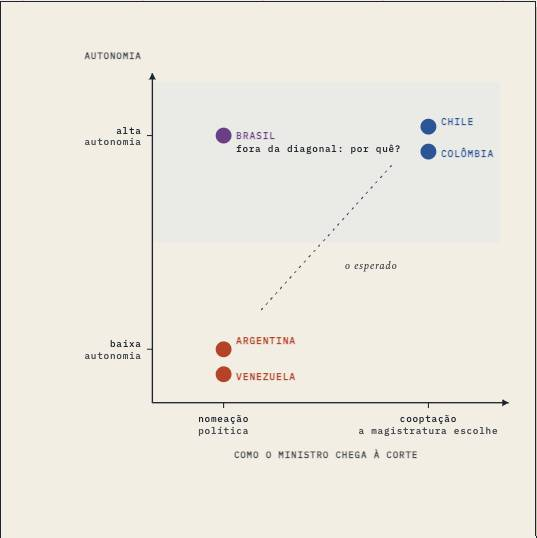
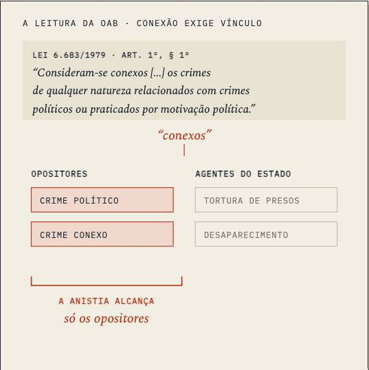
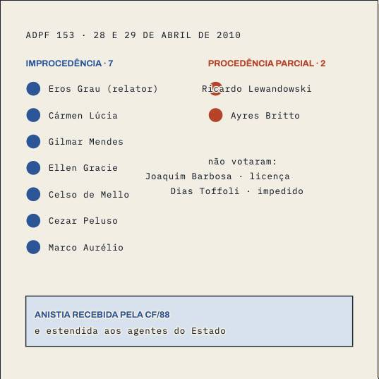
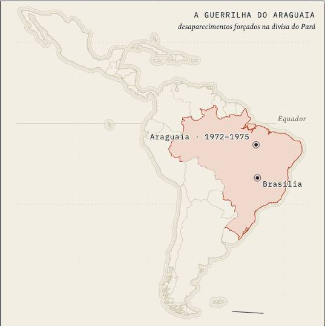
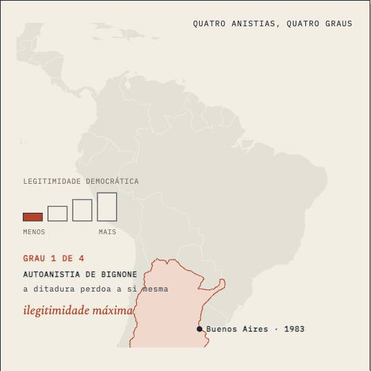
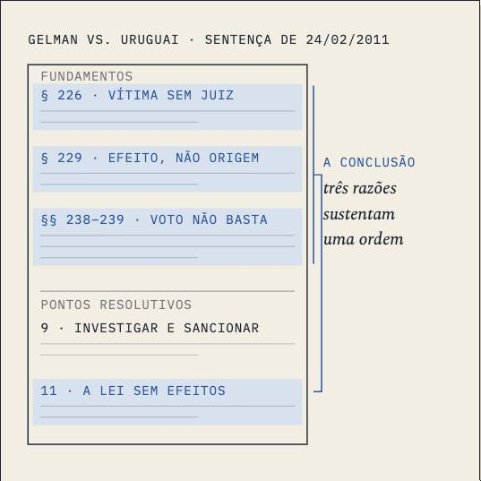
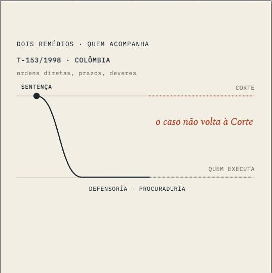
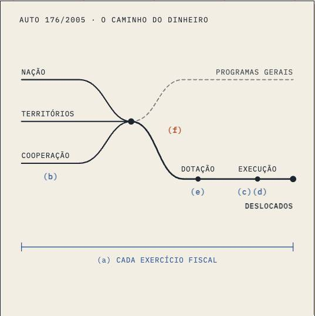
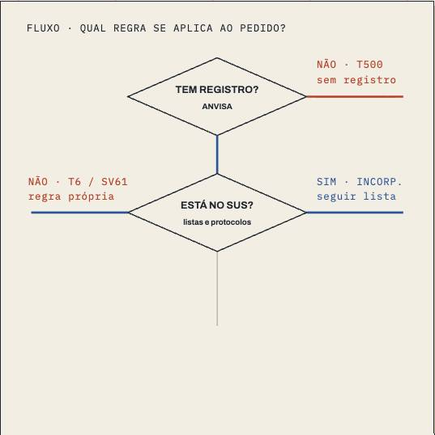

Prepared well, rebuilt halfway, never designed as one object.
A 2 Shenandoah course. It ran stations S0 to S5 of pipeline v1, then stopped. It predates the house style (06/10), the course blueprint, the foundry, integration and the blocking floors (10/10–14/10). Four of nine lessons were rebuilt by hand on 05/10; five are still the drafts of 27/09.
What went well
- Decisions carry the course. 49 of the 50 primary routings point at a decision or an official record (Gelman, T-025, SCP 0084/2017, OC-28/21, ADPF 153), not at summaries.
- Aula 05 is still the house's density reference. 4,057 words, 3 source blocks, 7 marks, no gap talk; Gelman read from the judgment itself.
- The rebuild fixed what the drafts had wrong. Seven facts corrected against the decisions (listed below).
- Every figure became an instrument. Maps on one frame, true-time axes, no box chains; the front's 'Quem respondeu a quem' map was the first course front drawn as its subject.
- Every lesson is one sitting. 3,298 to 4,310 words.
What went badly
- The rebuild stopped at four of nine. Aulas 03, 04, 07, 08 and 09 are the 27/09 drafts, each still with an 'Aprofundamento' appendix and the old test.
- Three plans came back REVISE and were never revised. 04, 07, 09. Two approved plans (03, 08) were never written.
- Aula 04 has nothing to stand on. Triage gave it no primary source (nothing on the shelf covers Colombian transitional justice); it has no source block and one figure.
- The shelf has holes. Seven rows are failed retrievals: STF full judgments behind 403s and empty responses. The course quotes Brazilian decisions it never fully had.
- Negated inference is over the limit on all nine. 0.55 to 2.92 per 1,000 words, my rebuilds included. The tic was mine as much as Codex's; nothing measured it until 06/10 and nothing blocked it until 10/10.
- The house style came after, by bulk pass. Aulas 02 and 04 still don't load it and have no source blocks.
- No RETRO. What this course taught lives only in old CEO handoffs.
Next, in order
- Make Latam the second course through 4 Grand Canyon. S0–S4 exist, so it starts at the course blueprint: which decision carries which lessons, where each decision is quoted, the figure cast.
- Fill the shelf's holes first. The chairman downloads the seven missing STF judgments; nothing gets written on a 403.
- Run the foundry on Aula 04 (bench: the weakest, no primary source) and Aula 08 (holdout: plan approved, never written).
- Rebuild 03, 07 and 09 in one wave. Keep 05. Rebuild 01, 02 and 06 only if the legacy read says they lose.
- Deslop negated inference course-wide, by span, measured, before the swap.
- Turn the revisão into the atividade workbench, from an atividade bank: Latam is assessed by the atividade, so S4b becomes that bank.
Thoughts
Latam taught me what Processo then confirmed: preparation is the part that works. Where the sources were real decisions, the lessons are good, whoever wrote them; where the shelf had a hole (Colombia, the STF judgments), the lesson is thin, whoever wrote it. My hand rebuilds beat the drafts but carry my own tics, and only measurement showed them. Nothing ever designed the course as one object, so no plan said what each lesson adds to the next. The next time this course is touched, it should go through the line, not through my hands.
CEO · 14/10
The life of the course
built by the CEO built by Codex (size = words) a commit a FLIGHT-LOG rule a check comes into force
The lessons
1 / 4")



1 / 2")










Where the sources went
Facts the rebuild corrected
- “mientras el soberano así lo desee” is the petitioners' argument in SCP 0084/2017, not the court's.
- Argentina's review is diffuse; Uruguay's is concentrated, with effects in the case.
- Engelmann & Bandeira's Colombian court is the Corte Suprema de Justicia, not the Corte Constitucional.
- The 19-country table is undated.
- The three-project typology is not attributed in the course sources; it isn't credited to Gargarella.
- Gelman was unanimous; Vio Grossi concurred.
- Sentencia 65/2014 is not about Gelman.